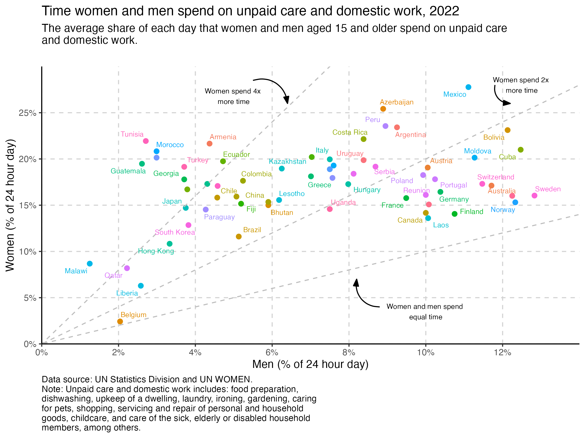
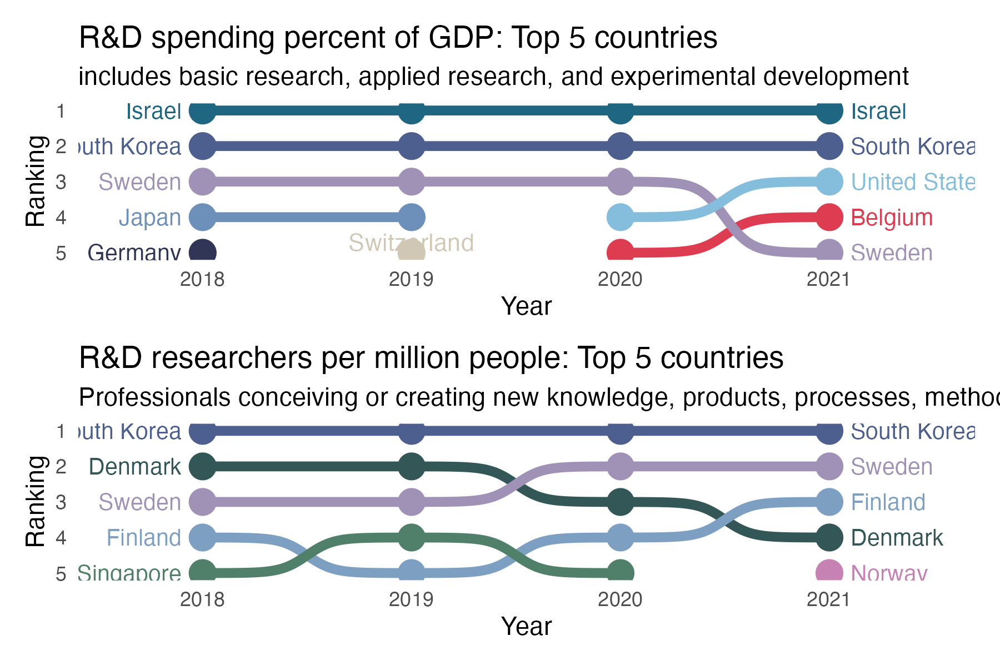
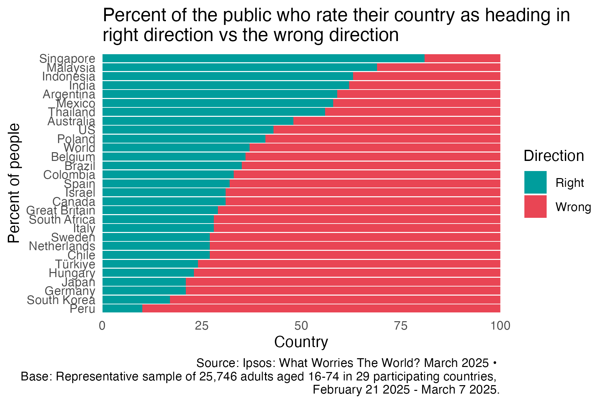
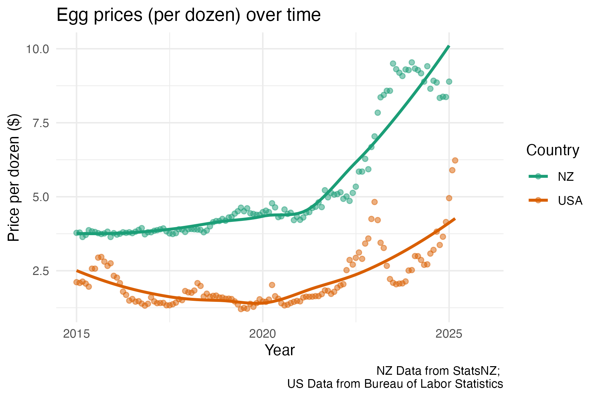
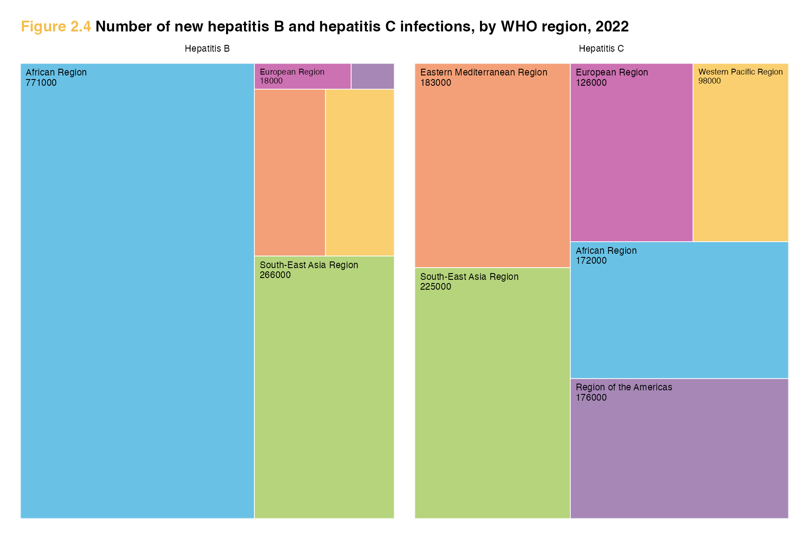
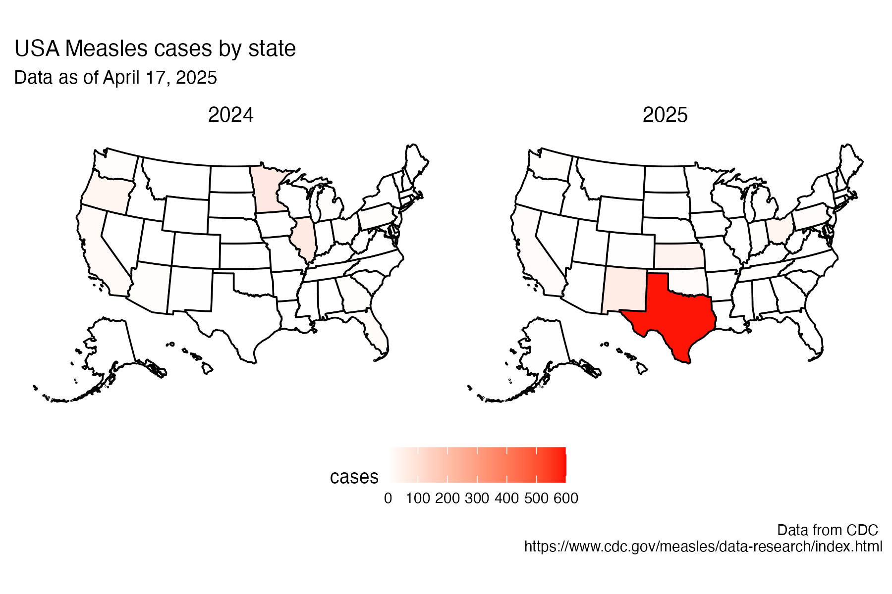

library(owidapi)
catalog <- owid_get_catalog()
willingness <- owid_get("willingness-climate-action") day 0 challenge
I have some time on my hands at the moment and thought the #30DayChartChallenge might be a good way to refresh my ggplot skills.

The Our World in Data is a fun place to explore data visualisations. They always make really interesting plots out of all kinds of different data, but they use an in-house data viz platform called “Grapher” so it isn’t easy to find code that can be used to reproduce the charts.
My goal in April is use the 30 day chart challenge prompt to find a Our World in Data plot that looks interesting, and then to try to reproduce the plot using ggplot code.
I will post the final code for each plot in a tabset below, but if you want to see how each chart came about (i.e. my troubleshooting process), there will be a blog post associated with each one.
The owidapi package is an easy way to get access to the data sources that the Our World in Data site uses.
- Load the package and then use the
owid_get_catalog()function to get a dataframe of all the different plots that have been made. - Find one on the site that fits the 30 Day Chart Challenge prompt and then find the slug in your catalog dataframe and use that with the
owid_getto read the data from the API.
Day 1 fractions
willingness2024 %>%
filter(entity_name != "World") %>%
ggplot(aes(y = prediction_others_willingness, x = self_willingness, colour = region)) +
geom_point() +
scale_y_continuous(labels = percent_format(accuracy = 1, scale = 1),
limits = c(0,100), expand = c(0,0), breaks = seq(0,100,20)) +
scale_x_continuous(labels = percent_format(accuracy = 1, scale = 1),
limits = c(0,100), expand = c(0,0), breaks = seq(0,100,20)) +
labs(y = "Predicted share willing to give",
x = "Actual share who said they were willing to give 1% of their income",
title = "People underestimate others' willingness to take climate action",
subtitle = "Participants were asked if they would contribute 1% of their income to tackle \nclimate change. \nThe share that answered 'yes' is shown on the horizontal axis. \nThe share of the population in their country that people think would be willing \nis shown on the vertical axis.") +
theme_bw() +
easy_remove_gridlines(axis = "both", minor = TRUE, major = FALSE) +
geom_abline(
slope = 1,
intercept = 0,
color = "grey",
linetype = "dotted") +
scale_colour_manual(values = c("#a2559b", "#00847d", "#4b6a9c", "#e56e59", "#38aaba", "#883039")) +
easy_remove_legend_title() +
geom_text_repel(aes(label = entity_name), size = 3, max.overlaps = 20)Day 2 slope
time %>%
filter(age < 80) %>%
filter(group == "All people") %>%
ggplot(aes(x = age, y = hours, colour = category)) +
geom_point(size = 1) +
geom_line() +
scale_colour_manual(values = c("#496899", "#6b3d8d", "#2b8465", "#986d39", "#b03508", "#883039")) +
theme_minimal() +
scale_y_continuous(expand = c(0,0), limits = c(-0.05,8.1), breaks = seq(0,9,1)) +
scale_x_continuous(breaks=c(15,30,40,50,60,70,80)) +
easy_remove_gridlines(axis = "x") +
easy_remove_gridlines(axis = "y", major = FALSE, minor = TRUE) +
theme(panel.grid = element_line(linewidth = 0.4, linetype = 2)) +
theme(axis.ticks.x = element_line(linewidth = 0.5, color="darkgrey") ,
axis.line.x = element_line(linewidth = 0.2, colour = "darkgrey", linetype=1)) +
easy_remove_legend() +
### the geom_text code below are created using the ggannotate package
geom_text(data = data.frame(x = 82, y = 7.8,
label = "Alone"), aes(x = x, y = y, label = label), size = 3, colour = "#496899") +
geom_text(data = data.frame(x = 82, y = 4.4,
label = "With \npartner"), aes(x = x, y = y, label = label), size = 3,colour = "#6b3d8d") +
geom_text(data = data.frame(x = 80, y = 1.3,
label = "With family"),aes(x = x, y = y, label = label), size = 3, colour = "#2b8465") +
geom_text(data = data.frame(x = 83.5, y = 0.7,
label = "With children"), aes(x = x, y = y, label = label), size = 2.5,colour = "#986d39") +
geom_text(data = data.frame(x = 83.5, y = 0.5,
label = "With friends"), aes(x = x, y = y, label = label), size = 2.5,colour = "#b03508") +
geom_text(data = data.frame(x = 83.5, y = 0.1,
label = "With coworkers"), aes(x = x, y = y, label = label), size = 2.5, colour = "#883039") +
labs(title = "Who Americans spend their time with, by age, All people",
subtitle = "Measured in hours per day, based on averages from surveys in the United States \nbetween 2010 and 2023",
x = "Age",
y = "Hours",
caption = "Data source: U.S. Bureau of Labor Statistics (2023). \nNote: Activities such as sleeping, grooming, and personal care are not included in the data. \nRelationships used to categorize people are not exhaustive and time spent with multiple people counts toward all \n(e.g., attending a party with friends and partner counts toward both friends and partner)") +
theme(plot.caption = element_text(hjust = 0)) # make the caption appear on the leftDay 3 circular
share2024_regions %>%
ggplot(aes(x = "", y = percent, fill = percent_women)) +
geom_col(colour = "white") +
coord_polar("y", start = 0) +
facet_wrap(~entity_name) +
scale_fill_manual(values = c("#a2559b", "#00847d", "#4b6a9c", "#e56e59", "#38aaba", "#6b3d8d", "#986d39" )) +
theme_void() +
easy_add_legend_title("Percent seats") +
labs(title = "Percent of countries by share of women in parliament in 2024, Regions",
subtitle = "Percent of seats in lower or single chamber of the legislature held by women",
caption = "Data source: V-Dem (2025) via OurWorldInData. \nNote: Only countries with at least one legislative chamber included.")Day 4 big small

dom_recent %>%
ggplot(aes(x = male, y = female, colour = country)) +
geom_point(size = 2) +
theme_classic() +
easy_remove_legend() +
theme(panel.grid.major = element_line(color = "lightgray", linetype = 2)) +
scale_y_continuous(labels = percent_format(accuracy = 1, scale = 1),
expand = c(0,0), breaks = seq(0,25, 5), limits = c(0,30)) +
scale_x_continuous(labels = percent_format(accuracy = 1, scale = 1),
expand = c(0,0), breaks = seq(0,12, 2), limits = c(0,14)) +
geom_abline(intercept = 0, slope = 1, colour = "gray", linetype = 2) +
geom_abline(intercept = 0, slope = 2, colour = "gray", linetype = 2) +
geom_abline(intercept = 0, slope = 4, colour = "gray", linetype = 2) +
geom_text(data = data.frame(x = 10, y = 3.5, label = "Women and men spend \nequal time"),
mapping = aes(x = x, y = y, label = label), size = 2.5, inherit.aes = FALSE) +
geom_text(data = data.frame(x = 12.5, y = 28, label = "Women spend 2x \nmore time"),
mapping = aes(x = x, y = y, label = label), size = 2.5, inherit.aes = FALSE) +
geom_text(data = data.frame(x = 5, y = 26.8, label = "Women spend 4x \nmore time"),
mapping = aes(x = x, y = y, label = label), size = 2.5, inherit.aes = FALSE) +
geom_text_repel(aes(label = country), size = 2.5, max.overlaps = 5) +
labs(title = "Time women and men spend on unpaid care and domestic work, 2022",
subtitle = "The average share of each day that women and men aged 15 and older spend on unpaid care \nand domestic work.",
x = "Men (% of 24 hour day)",
y = "Women (% of 24 hour day)",
caption = "Data source: UN Statistics Division and UN WOMEN.
Note: Unpaid care and domestic work includes: food preparation,
dishwashing, upkeep of a dwelling, laundry, ironing, gardening, caring
for pets, shopping, servicing and repair of personal and household
goods, childcare, and care of the sick, elderly or disabled household
members, among others.") +
theme(plot.caption = element_text(hjust = 0),
plot.subtitle = element_text(margin=margin(0,0,20,0))) +
geom_curve(data = data.frame(x = 5.5, y = 28.5, xend = 6.4, yend = 26),
mapping = aes(x = x, y = y, xend = xend, yend = yend), curvature = -0.515,
arrow = arrow(20L, unit(0.1, "inches"), "last", "closed"), alpha = 1, inherit.aes = FALSE) +
geom_curve(data = data.frame(x = 11.8, y = 28, xend = 12.2, yend = 26),
mapping = aes(x = x, y = y, xend = xend, yend = yend), curvature = 0.515,
arrow = arrow(20L, unit(0.1, "inches"), "last", "closed"), alpha = 1, inherit.aes = FALSE) +
geom_curve(data = data.frame(x = 8.8, y =4, xend = 8.2, yend = 7),
mapping = aes(x = x, y = y, xend = xend, yend = yend), curvature = -0.515,
arrow = arrow(20L, unit(0.1, "inches"), "last", "closed"), alpha = 1, inherit.aes = FALSE)Day 5 ranking

top5spend %>%
ggplot(aes(year, rank, color = country)) +
geom_point(size = 5) +
geom_bump(size = 2, smooth = 8) +
scale_colour_manual(values = palette_takehe_plus) +
geom_text(data = top5spend %>% filter(year == min(year)),
aes(x = year - .1, label = country), size = 3.5, hjust = 1) +
geom_text(data = top5spend %>% filter(year == max(year)),
aes(x = year + .1, label = country), size = 3.5, hjust = 0) +
scale_y_reverse() +
scale_x_continuous(limits = c(2017.6, 2021.5),
breaks = seq(2018, 2021, 1)) +
theme_minimal() +
easy_remove_legend() +
easy_remove_gridlines() +
labs(title = "R&D spending percent of GDP: Top 5 countries",
subtitle = "includes basic research, applied research, and experimental development",
y = "Ranking", x = "Year") +
geom_text(data = data.frame(x = 2019, y = 4.7, label = "Switzerland"),
mapping = aes(x = x, y = y, label = label),
size = 3.7, colour = "#D1C7B5", inherit.aes = FALSE)Day 6 florence
Willingness to get the COVID vaccine

us_oz %>%
ggplot(aes(x = month, y = percent, fill = status)) +
geom_col() +
scale_fill_manual(values = palette) +
coord_polar() +
facet_wrap(~country) +
easy_remove_axes(which = "y") +
theme(panel.background = element_rect(fill = 'white', colour = 'white')) +
easy_move_legend(to = "bottom") +
labs(title = "Willingness to get vaccinated against COVID-19, Mar 15, 2021 to Oct 15, 2021") +
easy_remove_axes(which = "x", what = "title")Day 7 outliers
ratio4 %>%
ggplot(aes(x = year, y = ratio, colour = country)) +
geom_point() +
geom_line() +
theme_classic() +
scale_colour_manual(values = get_pal("eastern_rosella")) +
scale_y_continuous(expand = c(0,0), limits = c(98, 120)) +
scale_x_continuous(breaks = seq(1950, 2020, 10)) +
geom_hline(yintercept = 100, linetype = 2) +
geom_text(data = data.frame(x = 2005, y = 100.8, label = "Equal numbers of newborn boys and girls"), mapping = aes(x = x, y = y, label = label), size = 3, inherit.aes = FALSE) +
labs(y = "Sex ratio", x = "Year",
title = "Sex ratio at birth, 1950 to 2023",
subtitle = "The sex ratio at birth is measured as the number of newborn \nboys for every 100 newborn girls. Higher values indicate a much \nhigher number of newborn boys than girls.",
caption = "Data source: UN, World Population Prospects (2024). \nNote: It's considered that 105 is the biologically expected sex ratio at birth.")Day 9 diverging
work_family %>%
ggplot(aes(x = year, y = important, colour = life_area)) +
geom_point(size = 2) +
geom_line() +
facet_wrap(~ country) +
labs(title = "How important family and work are to people in life",
subtitle = "Share of survey respondents rating `very important` or `rather important`",
x = "Year", y = "Percent of people",
caption = "Data source: Integrated Values Surveys (2022)") +
theme_minimal() +
scale_y_continuous(limits = c(70,100)) +
scale_x_continuous(limits = c(1990, 2022)) +
scale_color_brewer(palette = "Set1") +
easy_add_legend_title("Life Area")Day 11 stripes

maxmin <- range(qmean$annual, na.rm = T)
md <- mean(qmean$annual, na.rm = T)
qmean %>%
ggplot(aes(x = date, y = 1, fill = annual)) +
geom_tile() +
scale_fill_gradientn(colors = rev(col_strip),
values = scales::rescale(c(maxmin[1], md, maxmin[2])),
na.value = "gray80") +
scale_x_continuous(limits = c(1972, 2022), expand = c(0,0), breaks = seq(1972,2022, 10)) +
labs(
title = "Queenstown 1972-2022",
caption = "Data: Stats NZ",
x = "Year") +
coord_cartesian(expand = FALSE) +
theme_strip() +
easy_remove_axes(which = "x")Day 13 clusters

library(factoextra)
fviz_cluster(km_bodymass_bill, data = bodymass_bill,
show.clust.cent = FALSE, label=NA) +
theme_bw() +
labs(title = "Cluster plot k-means penguin classification")Day 16 negative
Is your country going in the right direction?

right_wrong_long_new %>%
filter(country != "France") %>%
ggplot(aes(x = country, y = percent, fill = track)) +
scale_fill_manual(values = palette, name = "Direction", labels = c("Wrong", "Right")) +
geom_col() +
coord_flip() +
theme_minimal() +
easy_remove_gridlines() +
scale_y_continuous(expand = c(0,0)) +
labs(y = "Country", x = "Percent of people",
title = "Percent of the public who rate their country as heading in \nright direction vs the wrong direction",
caption = "Source: Ipsos: What Worries The World? March 2025 • \nBase: Representative sample of 25,746 adults aged 16-74 in 29 participating countries, \nFebruary 21 2025 - March 7 2025.") +
guides(fill = guide_legend(reverse = TRUE))Day 17 birds
Puteketeke2023: A scrollytelling story

d23 %>%
ggplot(aes(x = rank_number, y = votes, fill = maori_name)) +
geom_col() +
scale_x_continuous(breaks = seq(1,10, 1)) +
scale_y_continuous(limits = c(0,350000)) +
labs(y = "Number #1 Votes", x = "Rank", title = "Bird of the Century 2023", subtitle= "Winner = Pūteketeke / Australasian crested grebe",
caption = "Note: some argue that the 2023 results were impacted by foreign election interference") +
theme_minimal() +
scale_fill_brewer(palette = "Paired", name = "Maori name")
p23 + geom_image(
data = tibble(rank_number = 1, votes = 320000, maori_name = "Pūteketeke"),
aes(image = here::here("charts", "2025-04-17_birds", "img", "grebe.jpg")), size = 0.15)Day 19 smooth

eggs %>%
ggplot(aes(x = date, y = price, colour = currency)) +
geom_point(alpha = 0.5) +
geom_smooth(se = FALSE, na.rm = TRUE) +
scale_colour_brewer(palette = "Dark2", name = "Country", labels = c("NZ", "USA")) +
theme_minimal() +
labs(y = "Price per dozen ($)", x = "Year",
title = "Egg prices (per dozen) over time",
caption = "NZ Data from StatsNZ; \nUS Data from Bureau of Labor Statistics")Day 22 stars

age_diff_decade %>%
filter(release_year >= 1980) %>%
ggplot(aes(x = decade, y = age_difference, fill = decade)) +
geom_rain(alpha = .5,
boxplot.args.pos = list(
width = .1, position = position_nudge(x = 0.2)),
violin.args.pos = list(
side = "r",
width = 0.7, position = position_nudge(x = 0.3))) +
theme_minimal() +
easy_remove_legend() +
scale_y_continuous(expand = c(0,0), limits = c(-.2, 55)) +
labs(y = "Age difference", x = "Decade", subtitle = "1980s - current")Day 24 WHO

hepB <- hep %>%
ggplot(aes(area = new_hepB, fill = WHO_region, layout = "fixed",
label = paste(WHO_region, new_hepB, sep = "\n"))) +
geom_treemap(colour = "white") +
scale_fill_manual(values = palette) +
geom_treemap_text(colour = "black",
place = "topleft",
size = 5,
grow = FALSE) + # option from ggfittext to NOT make font fit box
easy_remove_legend() +
labs(title = "<span style='color:#F4BD4B;'>Figure 2.4</span><span> Number of new hepatitis B and hepatitis C infections, by WHO region, 2022</span>",
subtitle = "Hepatitis B") +
theme(plot.subtitle = element_text(hjust = 0.5, size = 5),
plot.title = element_markdown(hjust = 0, size = 8, face = "bold"))
hepC <- hep %>%
ggplot(aes(area = new_hepC, fill = WHO_region, layout = "fixed",
label = paste(WHO_region, new_hepC, sep = "\n"))) +
geom_treemap(colour = "white") +
scale_fill_manual(values = palette) +
geom_treemap_text(colour = "black",
place = "topleft",
size = 5,
grow = FALSE) + # option from ggfittext to NOT make font fit box
easy_remove_legend() +
labs(subtitle = "Hepatitis C") +
theme(plot.subtitle = element_text(hjust = 0.5, size = 5))
hepB + hepC Day 25 risk

plot_usmap(data = cases2425, values = "cases_calendar_year", labels=FALSE) +
scale_fill_continuous(low = "white", high = "red",
name = "cases",
limits = c(0,600)) +
labs(title = "USA Measles cases by state", subtitle = "Data as of April 17, 2025", caption = "Data from CDC \nhttps://www.cdc.gov/measles/data-research/index.html") +
facet_wrap(~ year) +
theme(
legend.position = "bottom",
strip.background = element_blank(),
strip.text = element_text(color = "black", size = 10)
)Day 27 noise

sb %>%
ggplot(aes(x = hours_to_game_begin, y = avg_leq,
colour = super_bowl_sunday, linetype = super_bowl_sunday)) +
geom_line() +
facet_grid(year~game_zone) +
theme_minimal() +
easy_remove_gridlines(axis = c("x")) +
scale_colour_manual(values = c("black", "red")) +
scale_linetype_manual(values = c("dashed", "solid")) +
easy_remove_legend() +
annotate("rect", xmin = 0, xmax = 3.5, ymin = -Inf, ymax = Inf, alpha = 0.1, fill = "darkgrey") +
scale_x_continuous(limits = c(-6, 9), breaks= seq(-6, 9, 3)) +
scale_y_continuous(breaks= seq(50, 70, 10)) +
labs(title = "Super Bowl Sunday noise exposure in decibels", x = "Hours from start of Super Bowl", y = "Average noise exposure (in decibels)", caption = "Data from Apple Hearing Study") +
geom_text(data = data.frame(x = -1.3, y = 53, label = "Start game \n6:30 PM EST", game_zone = "Game States", year = "2024"),
mapping = aes(x = x, y = y, label = label),
size = 2, inherit.aes = FALSE) +
geom_text(data = data.frame(x = 2.3, y = 53, label = "End game \n10:00 PM EST", game_zone = "Game States", year = "2024"),
mapping = aes(x = x, y = y, label = label),
size = 2, inherit.aes = FALSE) +
geom_text(data = data.frame(x = -1.3, y = 53, label = "Start game \n6:30 PM EST", game_zone = "Non-game States", year = "2024"),
mapping = aes(x = x, y = y, label = label),
size = 2, inherit.aes = FALSE) +
geom_text(data = data.frame(x = 2.3, y = 53, label = "End game \n10:00 PM EST", game_zone = "Non-game States", year = "2024"),
mapping = aes(x = x, y = y, label = label),
size = 2, inherit.aes = FALSE) +
theme(panel.spacing = unit(1, "lines"))Day 28 inclusion

age_use %>%
ggplot(aes(x = age, y = estimate, fill = response)) +
geom_col() +
scale_fill_manual(values = palette1) +
easy_add_legend_title("Frequency") +
labs(y = "Percent of respondents", x = "Age group", ,
title = "Digital inclusion: Wellbeing NZ 2023",
subtitle = "Internet use", caption = "Data from StatsNZ") +
theme_minimal() +
easy_remove_gridlines(axis = "y") Day 30 national geographic

# insert ggplot code